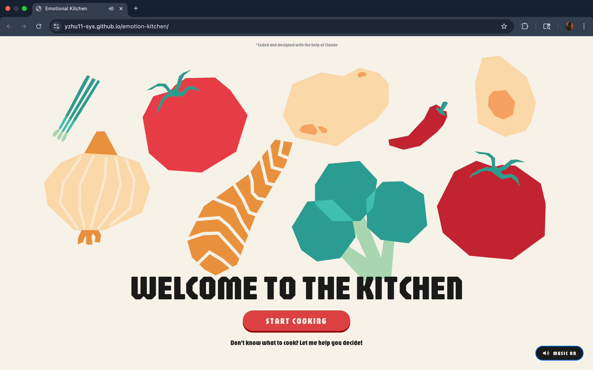
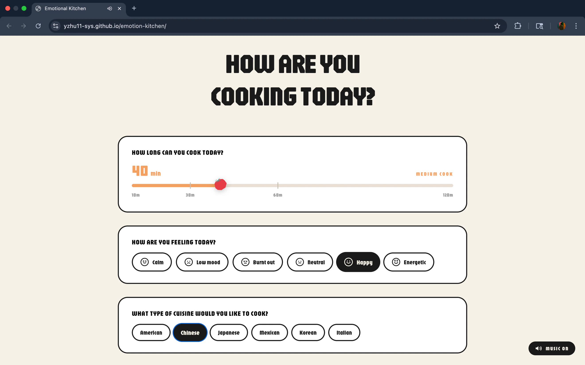
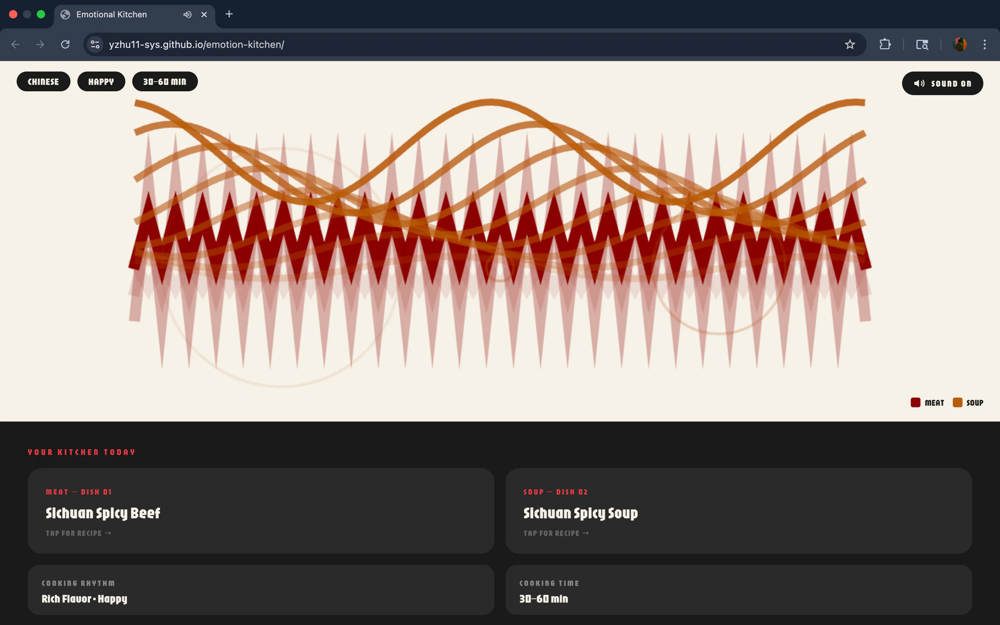
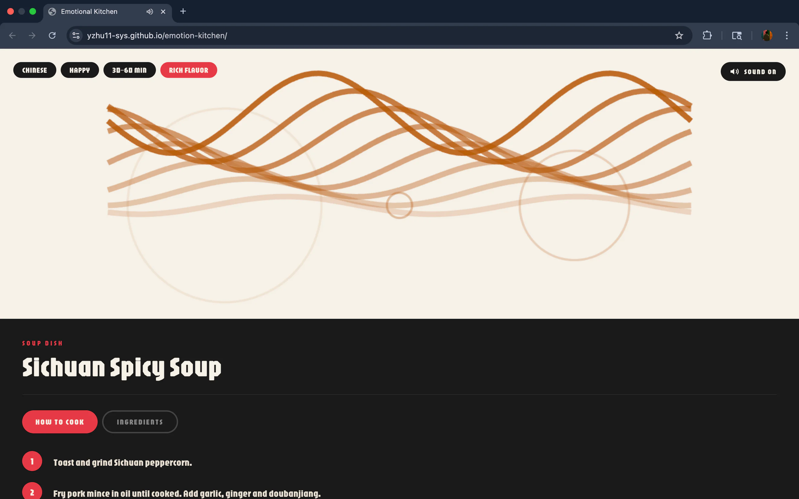

Emotion Kitchen
An interactive guide to what to cook, based on how you feel.
Vibe Coding
Web Design
Year
2026
Description
Emotion Kitchen is an interactive data visualization that explores the relationship between how we feel and what we cook. The app acts as a tool that helps you decide what to cook. Instead of charts or graphs, it translates mood, energy, and available time into a personalized cooking experience that feels alive and responsive. Users move through three questions about their mood, cooking time, and cuisine preference and the site responds with a dish recommendation, a generative pattern animation, and a synthesized soundscape that all shift based on their input. Every color, sound, and animation is tied to the data where flavor richness controls volume, energy level controls speed and rhythm, and no two combinations feel exactly the same.
What Should I Cook?
Deciding what to cook is hard, and it changes with your mood, your energy, and the time you have.
A Kitchen That Responds to You
Three questions about mood, cooking time, and cuisine return a dish recommendation, a generative pattern animation, and a synthesized soundscape.


Flavor richness controls volume and energy level controls speed and rhythm, so no two combinations feel the same.

